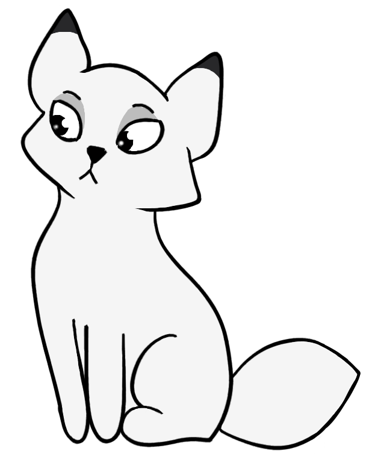
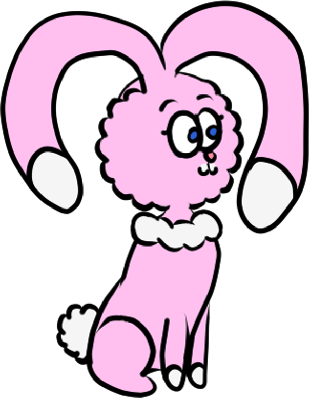
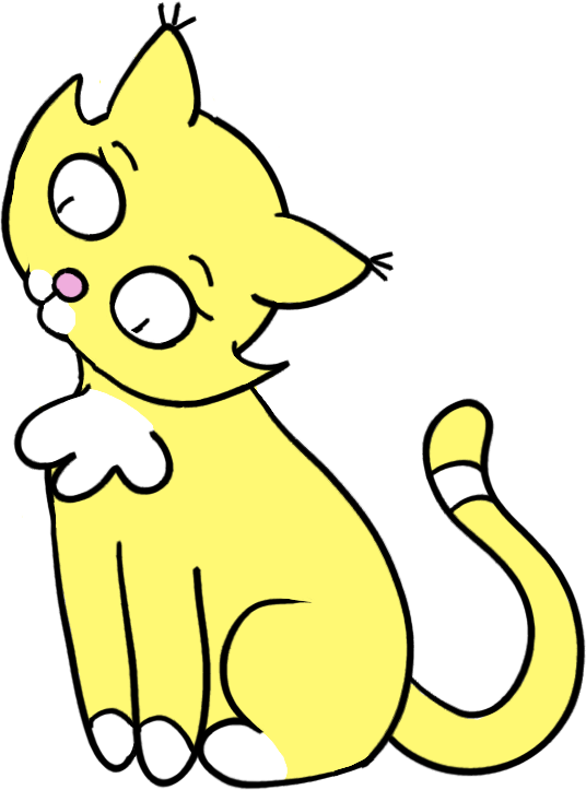
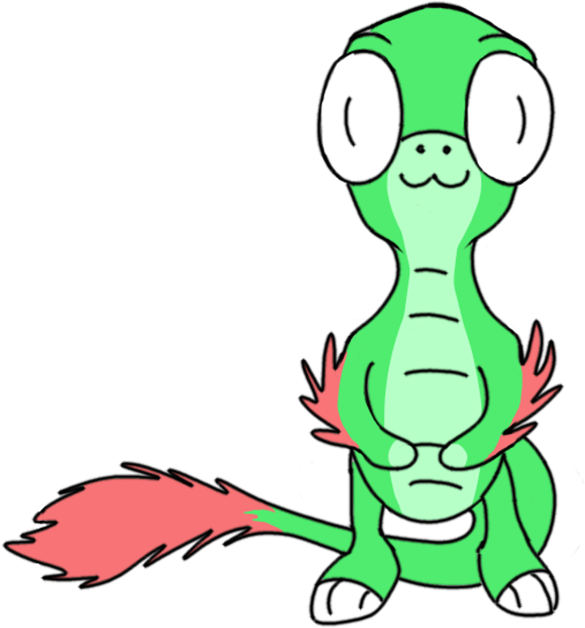

Meet the Cast
Fluff
Fluff is serious, very orderly and the first Celestimal to appear in the comics. She represents order, seriousness, responsibility and peace. She has a natural curiosity for things related to knowledge and, just like the rest, she loves to play.


Bun
Bun is a mischievous but very endearing little Celestimal. She adores playing and teasing. She represents fun, ambition, mischief and friendship. Also loves solving problems and learning new things.
Cake
Cake is curious and very caring. She represents curiosity, care, creativity and adventure. She loves helping others and going on adventures, though she can cause quite a bit of chaos when her curiosity goes unchecked.


Waffle
Waffle is a little rascal who is always on the lookout for something new. He represents playfulness, cuteness and shenanigans. He adores to explore and investigate new things. As a raptor he also has a fierce side.